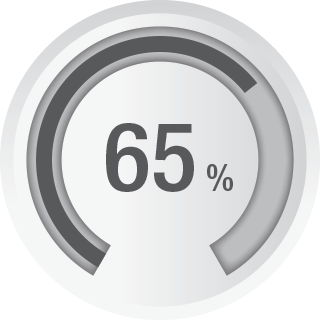
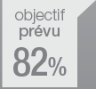
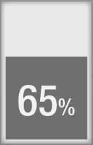

        <div data-role="page" class="vrn-page" id="vrn-stats-page">

            <!-- Header, filled by app.controller -->
            <div data-role="header" class="vrn-header" data-position="fixed" data-tap-toggle="false">
                <span class="ui-title"></span>
                <div class="ui-btn-right vrn-header-controls">
                    <span id="vrn-orange">Visit Optimizer</span>
                    <!--  -->
                    <a href="#" id="vrn-connectivity" data-role="button" data-inline="true" data-mini="true" data-shadow="false" data-iconshadow="false"
                       data-icon="circle" data-iconpos="left"  data-theme="without_border" class="app-theme-none"></a>
                    <!--  -->
                    <a href="#settings-popup" id="vrn-settings" data-role="button" data-inline="true" data-mini="true" data-shadow="false"
                       data-iconshadow="false" data-icon="settings" data-iconpos="notext" data-rel="popup" data-theme="without_border" class="app-theme-none">Settings</a>
                    <!--  -->
                    <a href="#help-popup" id="vrn-help" data-role="button" data-inline="true" data-mini="true" data-shadow="false" data-iconshadow="false"
                       data-icon="help" data-iconpos="notext" data-rel="popup" data-theme="without_border" class="app-theme-none">Help</a>
                </div>
            </div>

            <!-- Content -->
<div data-role="header">		
	<div data-role="navbar" >
		<ul>
			<li><a href="#" class="ui-btn-active ui-state-persist"><strong style="color: #fff;">Semaine</strong></a></li>
			<li><a href="#"><strong style="color: #fff;">Mois</strong></a></li>
			<li><a href="#"><strong style="color: #fff;">Ann�e</strong></a></li>
		</ul>
	</div><!-- /navbar -->
</div>
<aside>
<article style="margin-top: 3%;">
   
   <p style="margin-left: 56%;margin-top: -17%;"> 
   Taux de mise en place de <strong> L'Action Prioritaire </strong> <br> AP mises en place : 16 <br> AP non mises en place : 25 </p>
</article> 
<article style="margin-top: 20%;margin-left: 15%;">
   <p> Taux de visites effectu�es</p>
   
   
</article>
<article style="margin-left: 58%;margin-top: -19%;">
   
   <p> Nombre de visite annul�es <strong> 04 </strong> <br> sur un total de 15 visites </p>
</article>    
</aside>

<div data-role="footer" data-position="fixed" data-tap-toggle="false">
    <div id="vrn-footer-navbar">
        <ul> 
          <li class="vrn-footer-navbar-li"><a href="homepage.html" id="vrn-taskboard" class="btn " data-transition="slide"><span class="vrn-footer-navbar-btn-inner"><div class="footer-icon-task">&nbsp;</div><span class="vrn-footer-navbar-btn-text">Taskboard</span></span></a></li> 
          <li class="vrn-footer-navbar-li"><a href="inform.html" id="vrn-watchword" class="btn " data-transition="slide"><span class="vrn-footer-navbar-btn-inner"><div class="footer-icon-inform">&nbsp;</div><span class="vrn-footer-navbar-btn-text">Info</span></span></a></li> 
          <li class="vrn-footer-navbar-li"><a href="roadmap.html" id="vrn-roadmap" class="btn" data-transition="slide"><span class="vrn-footer-navbar-btn-inner"><div class="footer-icon-road">&nbsp;</div><span class="vrn-footer-navbar-btn-text">Roadmap</span></span></a></li> 
          <li class="vrn-footer-navbar-li"><a href="pos.html" id="vrn-pos" class="btn" data-transition="slide"><span class="vrn-footer-navbar-btn-inner"><div class="footer-icon-pos">&nbsp;</div><span class="vrn-footer-navbar-btn-text">POS</span></span></a></li> 
          <li class="vrn-footer-navbar-liselected"><a href="stats.html" id="vrn-stats" class="btn-selected" data-transition="slide"><span class="vrn-footer-navbar-btn-inner"><div class="footer-icon-statsselected">&nbsp;</div><span class="vrn-footer-navbar-btn-text">Stats</span></span></a></li> 
          <li class="vrn-footer-navbar-li"><a href="params.html" id="vrn-params" class="btn" data-transition="slide"><span class="vrn-footer-navbar-btn-inner"><div class="footer-icon-params">&nbsp;</div><span class="vrn-footer-navbar-btn-text">Param</span></span></a></li> 
        </ul>
    </div>
</div>


            

            
 